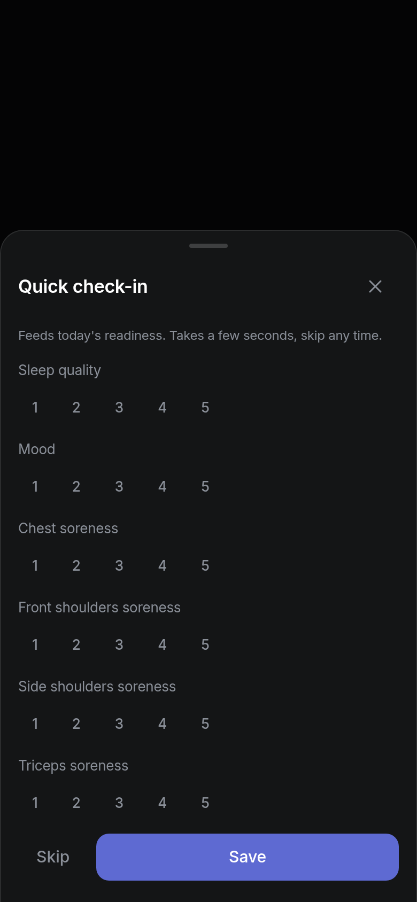
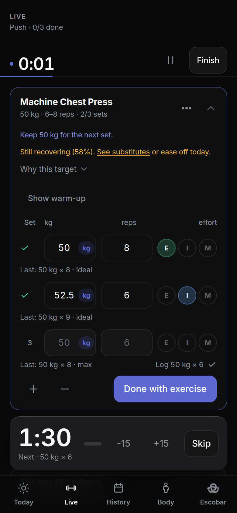
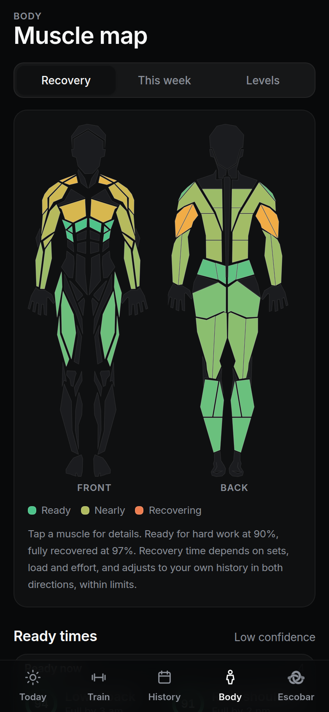
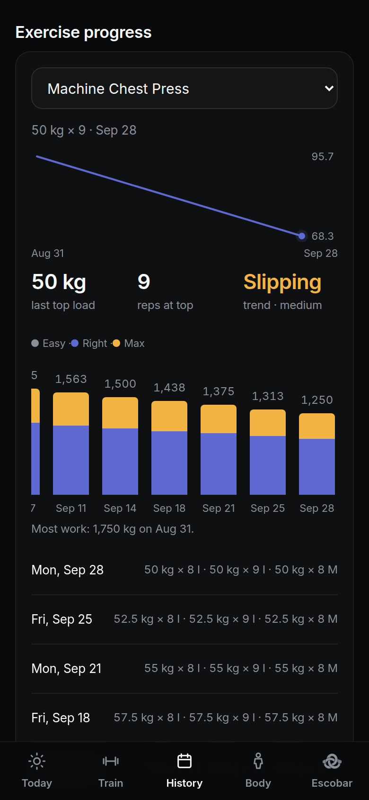
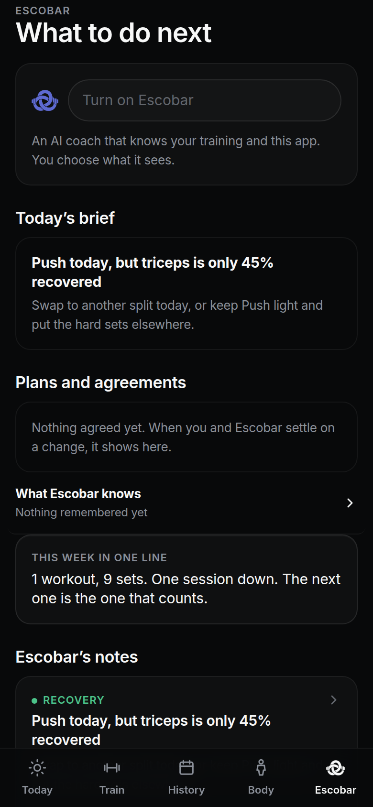

Version 37.1.0 for Android and the browser
What to lift today, and why.
M/ARC is a workout log for Android and the browser. It keeps every set on your phone, works out how recovered each of 24 muscles is, scores the day from 0 to 100 and sets your next targets from your own numbers. No account. Nothing leaves the phone unless you turn on Escobar, the optional online coach.
Signed APK. Works offline. Public source.

66
Amber. Keep loads steady today and skip any increases.
Readiness on Monday, September 28. One point under green.
In the build
What ships in 37.1.0.
Every figure on this page is read from the source, which is public on GitHub.
exercises153src/data/exercises.json
muscles24src/data/muscles.ts
kinds of records6src/brain/prs.ts
changes Escobar can propose14src/escobar/tools/schema.ts
seconds to undo8docs/ARCHITECTURE.md
unit tests1,255tests/, 117 files
themes5src/theme/themes.ts
signing key1.github/workflows/build-apk.yml
Today
Targets that respect a bad night.
Each day M/ARC scores your readiness from 0 to 100 using your check-in, sleep, resting heart rate, HRV and the load you have carried this week. Green starts at 67. Red is 33 or below. The score changes the plan: Amber holds every load at last session's numbers, Red cuts sets.
For the first 14 days the card says calibrating while it learns your range. The check-in takes a few seconds and you can skip it. Tap Take today off and the card reads: Push can wait. Today counts as a rest day: your streak and this week's target leave it out.
Green, 67 and aboveTrain as planned.
Amber, 34 to 66Keep loads steady. Skip increases.
Red, 33 and belowFewer sets today.

The quick check-in before a Push session: sleep quality, mood and soreness for chest, shoulders and triceps on a 1 to 5 scale.
Train

- 50 kg × 8, rated E
- 52.5 kg × 6, rated I
- Rest 1:30. Next 50 kg × 6
A live Push session on the machine chest press: set one 50 kg for 8 rated E, set two 52.5 kg for 6 rated I, the third pre-filled at 50 kg for 6, rest counting down from 1:30.
Every set arrives with a target and a reason.
Open a session and each row already says what to do: 50 kg for 6 to 8 reps, hold or step up, and why. Tap the row to log it as planned, or type what you did. Rate the set with one letter: E for three or more reps left, I for one to three, M for nothing left. A missing rating never counts as easy or max. It lowers confidence instead.
Rest runs on the timer, or ends when your heart rate settles if a watch is connected over Bluetooth, and falls back to the timer if the signal drops. Beat a record and the set shows PR while you are still on the bench. Tap a barbell load to see plates per side, and each gym remembers whether a machine is in kg or lb. Up to 8 gyms.
Body
Ready at 90%. Full at 97%.
Every working set leaves a mark on the muscles it used, sized by their role in the lift, the load, the reps and how hard you rated it. That mark fades over the week and stacks with the next session. Each of the 24 muscles keeps its own clock, tuned to how your last sessions went, within limits.
Ready for hard work at 90%. Fully recovered at 97%. When sleep, resting heart rate and total load slow the whole body down, the map says so in one line. Tap any muscle for its last session, its ready time and a confidence label. If it already feels fine, mark it as fresh.

The Body tab in Recovery view. Chest and front shoulders are marked Nearly, rear shoulders Recovering, legs and back Ready. The ready times below are marked low confidence.
90%ready for hard work
97%fully recovered
24muscles on the map
7 daysstacking window
Triceps 45%
Chest 58%
The small tick on each ring marks 90%, Ready.
History
Six kinds of records, and a trend for every exercise.
History keeps heaviest load, strength estimate, more reps at a load, most reps, longest hold and furthest carry, each in the unit you typed. Every exercise gets a line once you have logged it twice, with a plain word for where it is heading.
Open any past session and edit a set; recovery is rebuilt from the corrected history. Delete one by mistake and Undo brings it back with its heart-rate data. Swipe the calendar to move between months. Share a week or a session as a card.
- Heaviest load
- Strength estimate
- More reps at a load
- Most reps
- Longest hold
- Furthest carry

History in Stats view. The machine chest press line falls from 95.7 on August 30 to 68.3 on September 27, last top load 50 kg, trend marked Slipping.
Escobar

Today's brief on the Escobar tab: Push today, but triceps is only 45% recovered, with the suggestion to swap splits or keep Push light. Nothing agreed yet.
Every number Escobar says is checked against your log.
Escobar is the one part of M/ARC that goes online, and it is off until you turn it on. Ask it anything about your training. Every number in its answer is checked against the data on your phone before it stands; anything it cannot support is repaired or marked, and you can see what it looked at.
When it proposes a split, a schedule, today's loads or a lighter week, the change arrives as a card. Nothing happens until you tap Apply, and you have 8 seconds to undo. 14 kinds of change work this way. Health and body data travel only with their own switches on, and switching one off redacts that data from the history Escobar can replay. Without a network the notes, the weekly review and the lighter-week suggestion still run on the phone.
NoticedPush is scheduled today. Triceps is 45% recovered.
MeansHard triceps sets would land on a muscle that is not ready.
Do nextSwap to another split, or keep Push light and put the hard sets elsewhere.
Your data
Your log is a file on your phone.
There is no sign-up and no server copy. Sessions, recovery and settings live in the phone's own storage. Export a backup as JSON, restore it with a preview and an Undo, or export every set as CSV for the last 90 days or all time. If saved data ever fails to read, M/ARC keeps it aside as a rescue file instead of throwing it away. Steps, sleep and heart rate can come in from Android Health Connect and stay on the phone; they reach Escobar only with the Share health data switch on.
Accountnone
Server copynone
Storageon the phone
BackupJSON, preview then restore, Undo
ExportCSV, 90 days or all time
Unreadable datakept as a rescue file
Escobar sendsonly what a tool asks for; health and body data behind their own switches
Signing keyone permanent key, fingerprint checked in CI on every build
Install
No account. No sign-in. Works offline.
In the browser
Runs in the browser
M/ARC also runs as a web app, but it has no hosted address yet. When it does, open it in Chrome, Edge or Samsung Internet on Android and choose Add to Home Screen. Until then, install the APK or build the web app from the source.
No hosted address yet. Build from the source, or install the APK.
Android APK
Signed with one key
Version 37.1.0. Every build is signed with the same key, and CI checks the fingerprint before an APK is published.
Version 37.1.0 · Release notes on GitHub
Signing key SHA-256. Does not change between versions.
05:66:9A:D2:72:1C:6A:BA:F9:FD:D4:B9:B8:4E:2F:B7:94:48:44:B1:DE:F3:59:84:5F:01:5F:2B:67:CA:F1:F5
apksigner verify --print-certs M-ARC.apk
If the fingerprint matches, the file was signed by the M/ARC key and has not been altered.
Obtainium can install M/ARC straight from the GitHub releases page and checks the signature for you.
Android 8 or later. Allow installs from GitHub or your browser when asked.
Source
Public on GitHub
The code is public on GitHub with the architecture notes. Every push runs the type check, 1,255 unit tests in three time zones, a production build and a visual gate across the five themes before an APK is signed.
Node 22. Preact, TypeScript and Vite. Capacitor for the Android build.